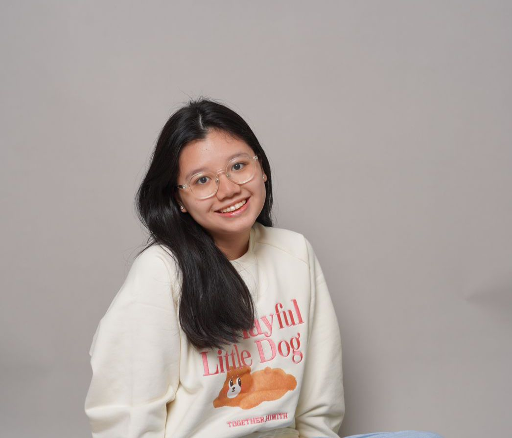
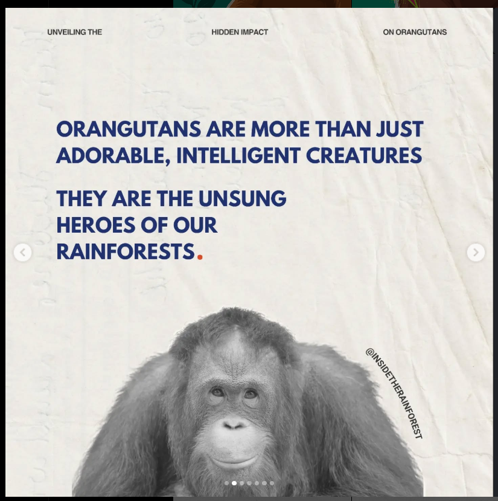

About Me
 
Perkenalkan, saya Klarisa Adenan, akrab dipanggil Klarisa. Saya merupakan siswi SMP Santa Ursula Jakarta yang sekarang duduk di kelas 9, tepatnya 91. Saya memiliki minat yang besar dalam bidang lingkungan hidup dan ekosistem daratan, salah satu wujud dari minat saya itu adalah saya bergabung dengan organisasi yang mengupayakan pelestarian lingkungan dan keanekaragaman hayati di Indonesia khususnya orang utan. Saya bergabung dengan organisasi Inside the Rainforest yang berfokus pada pelestarian hutan hujan. Dengan itu, minat saya pada pelestarian lingkungan semakin besar, oleh karena itu, saya mengangkat tema tentang ekosistem daratan yang merupakan salah satu tujuan utama SDGs.
Saya sangat tertarik dalam bidang lingkungan hidup karena kekhawatiran saya tentang pemanasan global yang terjadi akhir-akhir ini. Indonesia menjadi salah satu negara dengan tingkat pemanasan global yang tak bisa terbilang sedikit, maka dari itu, saya ingin mengajak teman-teman dan pembaca website ini untuk semakin menyadari pentingnya lingkungan bagi kita dan ikut berupaya melestarikan lingkungan. Saya ingin mengajak teman-teman untuk semakin memahami parahnya deforestasi dan degradasi lahan yang tidak hanya ada di Indonesia, melainkan seluruh dunia. Oleh karena itu, saya ingin mengajak pembaca untuk melakukan langkah dan upaya kecil untuk melestarikan lingkungan lewat solusi yang saya berikan.

Setelah membuat website ini, saya semakin menyadari bahwa pemanasan global yang terjadi sekarang terjadi karena banyak faktor dan salah satunya adalah kurangnya kesadaran masyarakat akan lingkungan hidup yang selama ini telah menjadi penopang bagi kehidupan kita bahkan tempat kita berpijak. Saya semakin menyadari, bahwa masalah ini merupakan salah satu hal yang penting dan membutuhkan upaya kita bersama sebagai generasi muda untuk berupaya lewat langkah-langkah kecil untuk ikut melestarikan lingkungan.
Saya sendiri juga menyadari, bahwa terkadang saya lalai dan lupa akan pentingnya melestarikan lingkungan, bahkan terkadang saya memilih menggunakan barang sekali pakai karena lebih mudah digunakan daripada barang yang bisa digunakan berulang kali, dan tanpa saya sadari, saya telah menjadi salah satu orang yang kurang sadar akan pentingnya pelestarian lingkungan. Karena minat saya pada pelestarian lingkungan, saya sangat senang mendapat kesempatan untuk semakin memahami permasalahan lingkungan yang sedang terjadi saat ini. Maka, saya berkomitmen untuk ikut menjadi salah satu generasi muda yang peduli dengan lingkungan agar keadaan lingkungan kita ini tidak semakin parah. Saya akan lebih mempedulikan barang-barang yang saya gunakan khususnya barang sekali pakai, saya juga akan meminimalisir penggunaan listrik khususnya AC apabila tidak diperlukan, serta selalu membuang sampah pada tempatnya.